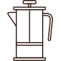
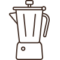
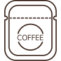
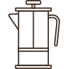
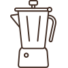
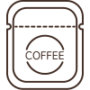
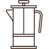
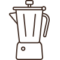
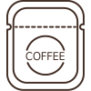
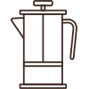
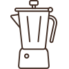
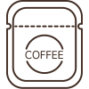
趁热拿铁-210207211岑柠，215701138杨云戈
World champion barista James Hoffmann and Cometeer partnered to conduct a first-of-its-kind coffee taste test. Cometeer shipped 5000 coffee kits across America. Kits contained four different coffees - pre-extracted and flash frozen. Tasters melted and diluted the coffee capsules for a largely identical tasting experience. Tasting and ratings were conducted blind. After survey responses were collected (provided data), some attributes of the coffee were revealed.
The main survey of the participants' preference for these four kinds of coffee.
The test participants need to answer three multiple choice questions after tasting, to choose the taste preference.
Then was a survey of participants' information, including age, gender, frequency of coffee consumption, self-rated coffee expertise level,income and dozens of other questions.